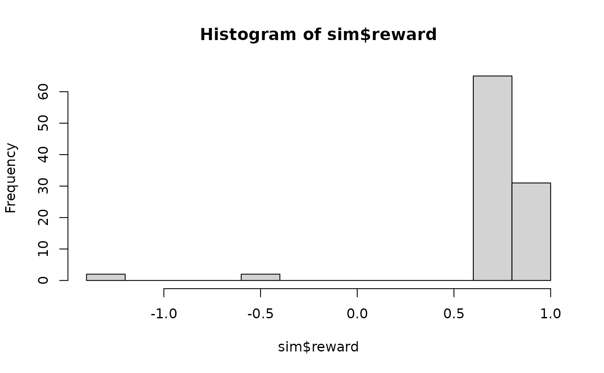

Simulate trajectories through an MDP. The start state for each trajectory is randomly chosen using the specified belief. The belief is used to choose actions from an epsilon-greedy policy and then update the state.
Usage
simulate_MDP(
model,
n = 100,
start = NULL,
horizon = NULL,
epsilon = NULL,
delta_horizon = 0.001,
return_trajectories = FALSE,
engine = "cpp",
verbose = FALSE,
...
)Arguments
- model
an MDP model.
- n
number of trajectories.
- start
probability distribution over the states for choosing the starting states for the trajectories. Defaults to "uniform".
- horizon
epochs end once an absorbing state is reached or after the maximal number of epochs specified via
horizon. IfNULLthen the horizon for the model is used.- epsilon
the probability of random actions for using an epsilon-greedy policy. Default for solved models is 0 and for unsolved model 1.
- delta_horizon
precision used to determine the horizon for infinite-horizon problems.
- return_trajectories
logical; return the complete trajectories.
- engine
'cpp'or'r'to perform simulation using a faster C++ or a native R implementation.- verbose
report used parameters.
- ...
further arguments are ignored.
Value
A list with elements:
avg_reward: The average discounted reward.reward: Reward for each trajectory.action_cnt: Action counts.state_cnt: State counts.trajectories: A data.frame with the trajectories. Each row contains theepisodeid, thetimestep, the states, the chosen actiona, the rewardr, and the next states_prime. Trajectories are only returned forreturn_trajectories = TRUE.
Details
A native R implementation is available (engine = 'r') and the default is a
faster C++ implementation (engine = 'cpp').
Both implementations support parallel execution using the package
foreach. To enable parallel execution, a parallel backend like
a parallel backend such as doparallel needs to be registered (see
doParallel::registerDoParallel()).
Note that small simulations are slower using parallelization. Therefore, C++ simulations
with n * horizon less than 100,000 are always executed using a single worker.
Examples
# enable parallel simulation
# doParallel::registerDoParallel()
data(Maze)
# solve the POMDP for 5 epochs and no discounting
sol <- solve_MDP(Maze, discount = 1)
sol
#> MDP, list - Stuart Russell's 3x4 Maze
#> Discount factor: 1
#> Horizon: Inf epochs
#> Size: 11 states / 4 actions
#> Start: 0, 0, 1, 0, 0, 0, 0, 0, 0, 0, 0
#> Solved:
#> Method: ‘value iteration’
#> Solution converged: TRUE
#>
#> List components: ‘name’, ‘discount’, ‘horizon’, ‘states’, ‘actions’,
#> ‘transition_prob’, ‘reward’, ‘info’, ‘start’, ‘solution’
# U in the policy is and estimate of the utility of being in a state when using the optimal policy.
policy(sol)
#> state U action
#> 1 s(1,1) 0.8513071 right
#> 2 s(2,1) 0.8007595 up
#> 3 s(3,1) 0.7409561 up
#> 4 s(1,2) 0.9077989 right
#> 5 s(3,2) 0.6842791 left
#> 6 s(1,3) 0.9578061 right
#> 7 s(2,3) 0.7002680 up
#> 8 s(3,3) 0.6321148 left
#> 9 s(1,4) 0.0000000 left
#> 10 s(2,4) 0.0000000 right
#> 11 s(3,4) 0.4045407 left
gridworld_matrix(sol, what = "action")
#> [,1] [,2] [,3] [,4]
#> [1,] "right" "right" "right" "left"
#> [2,] "up" NA "up" "right"
#> [3,] "up" "left" "left" "left"
## Example 1: simulate 100 trajectories following the policy,
# only the final belief state is returned
sim <- simulate_MDP(sol, n = 100, horizon = 10, verbose = TRUE)
#> Simulating MDP trajectories.
#> - method: C++ (cpp)
#> - n: 100
#> - horizon: 10
#> - epsilon: 0
#> - discount factor: 1
#> - start state distribution: 0 0 1 0 0 0 0 0 0 0 0
#>
sim
#> $avg_reward
#> [1] 0.7156
#>
#> $reward
#> [1] 0.76 0.76 0.84 0.80 0.76 0.84 0.80 0.68 0.76 0.64 0.80 0.68
#> [13] 0.76 0.76 -0.40 0.80 0.80 0.72 0.64 0.84 0.84 0.84 0.80 0.80
#> [25] 0.84 0.72 0.80 0.84 0.84 0.68 0.80 0.80 0.84 0.72 0.84 0.72
#> [37] 0.72 0.76 0.72 0.76 0.84 0.76 0.76 0.80 0.84 0.68 0.84 0.72
#> [49] 0.84 0.80 0.80 0.80 0.84 0.84 0.84 0.76 0.64 0.84 0.84 0.72
#> [61] 0.80 0.80 0.72 0.72 0.84 0.76 0.84 0.84 0.76 0.72 0.68 0.72
#> [73] 0.72 0.64 0.84 0.80 0.68 0.80 -1.24 0.80 0.84 0.84 0.84 0.76
#> [85] 0.84 -1.24 0.80 0.80 0.76 0.84 0.76 0.76 0.84 -0.40 0.80 0.84
#> [97] 0.72 0.80 0.76 0.84
#>
#> $action_cnt
#> up right down left
#> 279 364 0 16
#>
#> $state_cnt
#> s(1,1) s(2,1) s(3,1) s(1,2) s(3,2) s(1,3) s(2,3) s(3,3) s(1,4) s(2,4) s(3,4)
#> 119 140 26 122 16 124 14 0 96 2 0
#>
#> $trajectories
#> data frame with 0 columns and 0 rows
#>
# Note that all simulations start at s_1 and that the simulated avg. reward
# is therefore an estimate to the U value for the start state s_1.
policy(sol)[1,]
#> state U action
#> 1 s(1,1) 0.8513071 right
# Calculate proportion of actions taken in the simulation
round_stochastic(sim$action_cnt / sum(sim$action_cnt), 2)
#> up right down left
#> 0.42 0.56 0.00 0.02
# reward distribution
hist(sim$reward)

## Example 2: simulate starting following a uniform distribution over all
# states and return all trajectories
sim <- simulate_MDP(sol, n = 100, start = "uniform", horizon = 10,
return_trajectories = TRUE)
head(sim$trajectories)
#> episode time s a r s_prime
#> 1 1 0 s(3,4) left -0.04 s(3,3)
#> 2 1 1 s(3,3) left -0.04 s(2,3)
#> 3 1 2 s(2,3) up -1.00 s(2,4)
#> 4 2 0 s(1,4) left 0.00 s(1,4)
#> 5 3 0 s(1,4) left 0.00 s(1,4)
#> 6 4 0 s(2,1) up -0.04 s(2,1)
# how often was each state visited?
table(sim$trajectories$s)
#>
#> s(1,1) s(2,1) s(3,1) s(1,2) s(3,2) s(1,3) s(2,3) s(3,3) s(1,4) s(2,4) s(3,4)
#> 75 67 58 74 42 86 23 22 10 10 8